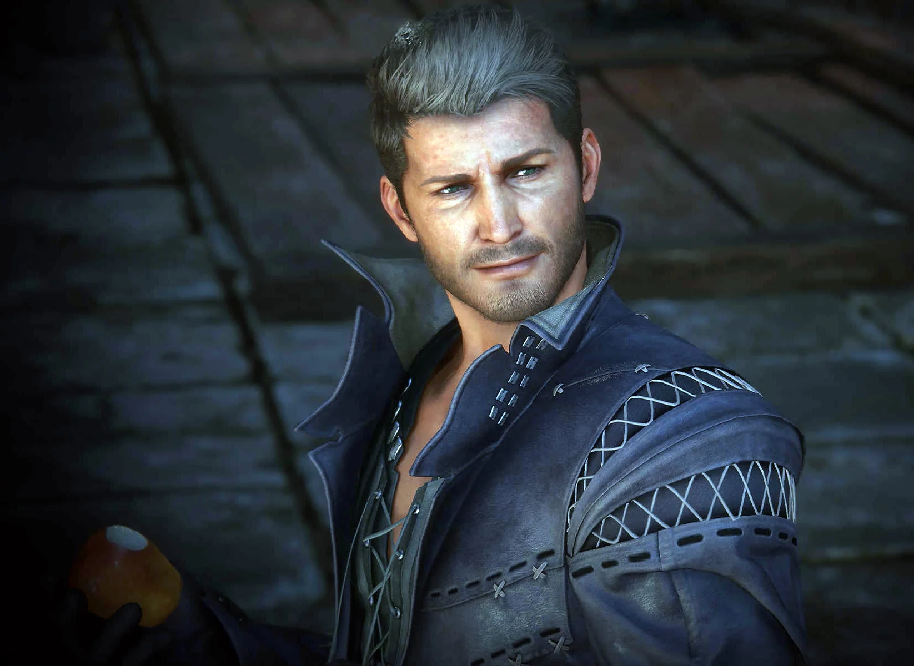
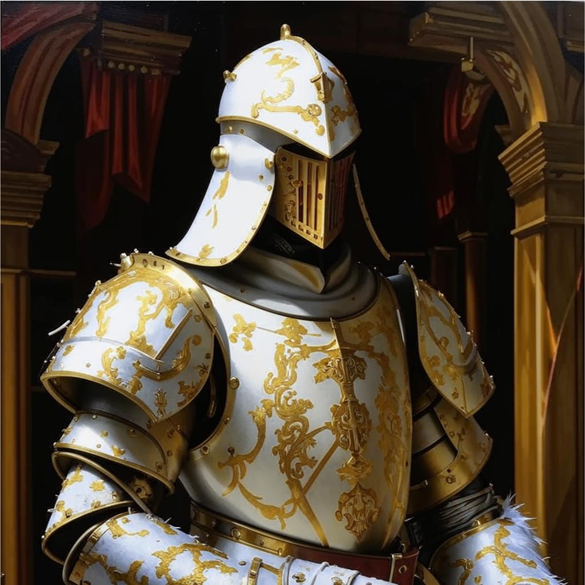
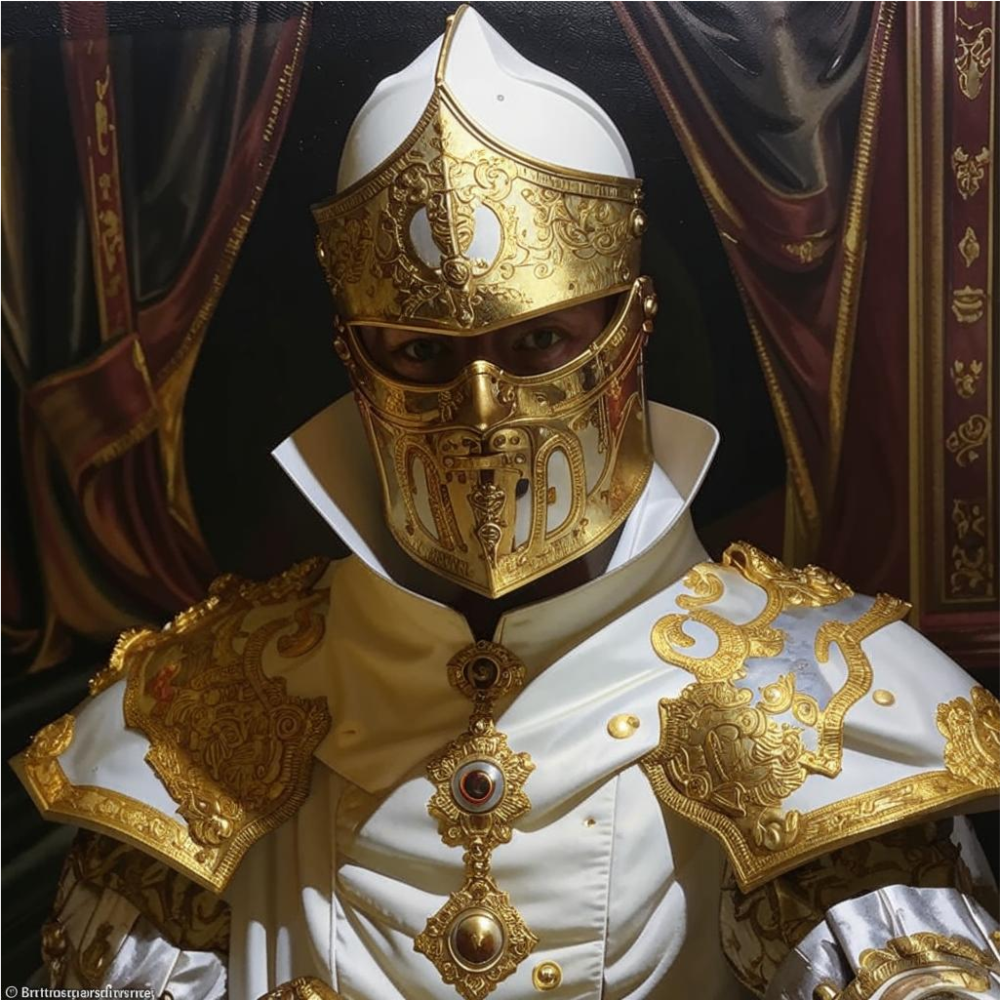

Персонажи
Сид
Бывший военачальник Герцогства Беймир, с началом войны между Беймиром и Ватиканом дезертировал в последний, причина тому до сих пор неизвестна. На данный момент является одним из стратегов, находящихся в авангарде боевых действий. Как его описывают среди солдат - "гениальный алкаш, изворотливый как уж".
Инквизиция
Инквизиция - одна из главенствующих сил Ватикана, без их согласия не может быть принято ни единое решение в стране, так же не стоит недооценивать их военную силу, отряды инквизиторов, не только лишь многочисленны, но еще и имеют превосходную подготовку и дисциплину, так как готовится к службе они начитают с малых лет (4-6 лет). На данный момент отряд знаком лишь с главой паствы Лазарем, который занимается "внутренними делами".
Глава паствы Лазарь
Годвин
Великодушный, добрый, но в то же время строгий главнокомандующий северного фронта Ватикана. Единственный человек, у которого получается держать в узде Сида и благодаря которому он до сих пор жив.